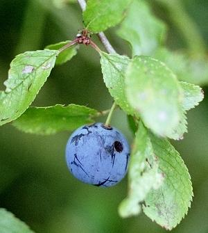

|
| Die Früchte werden ab September reif.
 | Die Steinfrucht ist schwarzblau gefärbt und hat einen hellblauen Wachsüberzug.
Sie ist kleiner als eine Pflaume und ganz rund.
Im Innern ist ein harter Steinkern.
Die Früchte sind sehr bitter, erst nach dem ersten Frost werden sie süß und essbar.
|